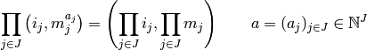
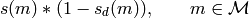
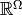
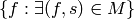
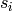
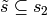
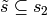
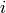
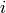

I am going to try and formalize a version of R‘s formula distinguishing between numeric and factor-like variables with the distinction that, for a numeric variable unlike in R. It also will not have a ‘’-‘’ operation.
A factor is a categorical variable, and the usual interpretation of
> a=factor(levels=c(2,3,4))
> b=factor(levels=c(3,4))
> ~a*b
~a * b
is as the Cartesian product of the columns of indicator matrices for a and b. But in R the formula has meaning even not knowing the levels of a and b. The expression ‘’‘a*b’‘’ above has a multiplication in it. R uses two different multiplications, I will only use one, and it corresponds to R‘s symbol :.
Formally, let be a set of factors. Multiplication automatically suggests some algebraic rules for formulae. We usually think of factors as obeying the rules

The rules correspond to: idempotency, associativity and commutativity. If we added an inverse to multiplication, then the set of factors would constitute a group. However, there is no inverse to multiplication. Algebraically, this means that the set of factors, combined with this operation and the properties above generates an algebraic object known as a monoid. Note, the above is not the constant 1, but the identity in the monoid generated by and the product ““. Algebraically, this idempotent, commutative monoid is isomorphic to the join-semilattice of subsets of with join representing union. In this view, corresponds to the emptyset .
In R‘s formulae there is also an addition operation, +. A monoid does not have addition, it only has one operation, multiplication. In order to introduce addition, we need to introduce something like an algebra. If we had a group, the natural structure to consider is called a group algebra or group ring. The corresponding notion for a monoid is that of a monoid ring or a monoid algebra, if the ring used in constructing the monoid ring is commutative. The monoid algebra is constructed from a monoid, which we already have, and a commutative ring.
For the classical ANOVA models (no numeric variables), we can take this ring to be . Below, when we introduce things like numeric vectors in R to our formula, we will change the ring to be the ring of real-valued functions on some space.
The monoid algebra  of our monoid over
can be expressed in terms of sets of 2-tuples with multiplication, addition and subtraction defined
as:
of our monoid over
can be expressed in terms of sets of 2-tuples with multiplication, addition and subtraction defined
as:
If we introduce variables then these rules can be written as
As our monoid is idempotent and commutative, we arrive at the conclusion that

This places R‘s convention
> a*a
logical(0)
Warning message:
In Ops.factor(a, a) : * not meaningful for factors
into a meaningful algebraic setting.
Actually, R does this for numeric variables as well, unless one uses the I notation.
> terms(formula(~x^2))
~x^2
attr(,"variables")
list(x)
attr(,"factors")
x
x 1
attr(,"term.labels")
[1] "x"
attr(,"order")
[1] 1
attr(,"intercept")
[1] 1
attr(,"response")
[1] 0
attr(,".Environment")
<environment: R_GlobalEnv>
> terms(formula(~I(x^2)))
~I(x^2)
attr(,"variables")
list(I(x^2))
attr(,"factors")
I(x^2)
I(x^2) 1
attr(,"term.labels")
[1] "I(x^2)"
attr(,"order")
[1] 1
attr(,"intercept")
[1] 1
attr(,"response")
[1] 0
attr(,".Environment")
<environment: R_GlobalEnv>
Unfortunately, we cannot make sense
of R‘s convention that  in the monoid algebra.
There are a few things wrong with the expression
if we take
in the monoid algebra.
There are a few things wrong with the expression
if we take  to be elements of the monoid .
The most important thing is to note that is not an element
of the algebra , which is the structure where we have
defined addition.
However, we can define an equivalence relation
on as follows
to be elements of the monoid .
The most important thing is to note that is not an element
of the algebra , which is the structure where we have
defined addition.
However, we can define an equivalence relation
on as follows
Let the map to equivalence classes be denoted by . Then,
R‘s convention is equivalent to
or
The set of equivalence classes has a well-defined notion of addition. Given two equivalence classes we define
where is a generic element of the equivalence
class  . Since our algebra is an algebra over ,
we can take the generic elements to be random integers, say in the range
[-1e6,1e6]. This means that this notion of the
sum of equivalence classes will break
down occasionally, in the sense
that, with probability roughly 4e-12, .
In the implementation of this in nipy, the ring we take can be thought of
as the ring of sympy dummy symbols, so, up to memory errors,
always.
. Since our algebra is an algebra over ,
we can take the generic elements to be random integers, say in the range
[-1e6,1e6]. This means that this notion of the
sum of equivalence classes will break
down occasionally, in the sense
that, with probability roughly 4e-12, .
In the implementation of this in nipy, the ring we take can be thought of
as the ring of sympy dummy symbols, so, up to memory errors,
always.
The set of equivalence classes also has a well defined notion of product
This, too, may occasionally break down depending on how we define our generic element . If we take the ring to be and generate a generic element by drawing from a random variable with a continuous density, like the standard normal , then with probability 1, the rules of addition and multiplication will not break down if we perform countably many such operations.
It is not hard to see that the multiplication and addition are associative, commutative and distributive on .
While addition and multiplication are well-defined on the set of equivalence classes, there is no corresponding notion of subtraction of equivalence classes because, generically,
Therefore, we cannot call the set of equivalence classes a ring
or any other familiar object. As our set of equivalence classes
is just we can delete
the terms from that appear in
by the elementwise multiplication

Or, regarding as subsets of , deletion of terms is just the operation .
We have now given a formal way of describing which sets of factors are to be included in a regression model. The set of factors to be included in a regression model is specified by an element of where the monoid is the semilattice of subsets of :math:{cal F}. On the set of factor specifications , we have defined two operations that obey the commutative, distributive and associative properties.
Above, we described rules for specifying which factors are to be included in the model. One can take the same approach for numeric variables, which is essentially what R does. However, R ultimately treats numeric and factors differently when it comes to building the design matrix. For instance,
In the first model below, subtracting 1 yields fitted values orthogonal to the constant, while this is not true in the second model.
> x = rnorm(40)
> y = rnorm(40)
> f = factor(rep(c(1,2),20))
> r1 = resid(lm(y~f-1))
> print(sum(r1))
[1] 3.608225e-16
> r2 = resid(lm(y~x-1))
> print(sum(r2))
[1] -8.2904
There is a perfectly good explanation for this if one uses R‘s rules for constructing a design matrix from an element of , as we will see below.
However, it does mean that factors and numerics are treated separately. One way to address this is to consider the monoid
where is a monoid for factors that is essentially the same monoid we saw in the previous section and is a monoid for numerical variables. The multiplication in this monoid is defined componentwise
The only remaining issue is how do we define multiplication in the monoid . R uses the same idempotency rules as for factors, though it seems more natural to use true multiplication instead.
> lm(y~x*x)$coef
(Intercept) x
-0.20740846 0.04942205
> lm(y~x)$coef
(Intercept) x
-0.20740846 0.04942205
This leaves room for some weird manipulations
> lm(y~x*log(exp(x)))
Call:
lm(formula = y ~ x * log(exp(x)))
Coefficients:
(Intercept) x log(exp(x)) x:log(exp(x))
-0.09736 -0.02874 NA -0.15829
> lm(y~x + I(x^2))
Call:
lm(formula = y ~ x + I(x^2))
Coefficients:
(Intercept) x I(x^2)
-0.09736 -0.02874 -0.15829
Using a symbolic system, like sympy can be helpful in cases like this.
Before continuing,
let us make a slight modification of the previous monoid
that recognizes the fact that these objects
are meant to represent random variables, that is functions on some
sample space  . The process of constructing the
design matrix is then just the evaluation of these functions
at some point . If we want to think
of a more concrete probability model, we can think
of a data.frame with
. The process of constructing the
design matrix is then just the evaluation of these functions
at some point . If we want to think
of a more concrete probability model, we can think
of a data.frame with  rows as a point in
and our probability distribution might correspond to IID samples
from some probability measure .
Of course, constructing the design matrix is completely
separate from specifying the joint distribution on , but
thinking of factors and numeric variables as functions
makes things more concrete.
rows as a point in
and our probability distribution might correspond to IID samples
from some probability measure .
Of course, constructing the design matrix is completely
separate from specifying the joint distribution on , but
thinking of factors and numeric variables as functions
makes things more concrete.
In this new view, a factor from the previous section is now defined as a
function where  is the set of
levels of the factor. We define a numeric variable as a real-valued function
on .
is the set of
levels of the factor. We define a numeric variable as a real-valued function
on .
With this definition, is a (finite) collection of functions
on , each taking values in a different space, and
is the same monoid as before. Therefore,
a member of the set of equivalence classes
can be viewed as a set of functions

We might then take to be the monoid
of real-valued functions on with multiplication
defined in the obvious way

There is, however, a possible measure theoretic complication to consider as we should properly consider equivalence classes on  defined by equality up to sets of probability 0 according to some probability space . Let us therefore fix this probability space and take , the collection of random variables on .
Carrying out the same construction of equivalence classes as for factors, our model is represented as a member of . Viewing this as a subset, our model is
Hence, our model is a collection of tuples of real-valued random variables
combined with a subset of the factors , each
of which are also functions defined on .
Given a description of our model, i.e. a set of tuples
we now must build a design matrix.
Formally, this corresponds to constructing a function
from  ,
and then evaluating this function at a
point which yields a matrix
,
and then evaluating this function at a
point which yields a matrix
Part of the construction is also to determine
a well-defined set of names for each column of  .
.
Given a linear, or total ordering on the random variables
we see in , i.e.

the process of building this design matrix can
be carried out in stages based on the functions  .
Let the ordering be determined as .
For each , we construct a function
.
Let the ordering be determined as .
For each , we construct a function
 and the final function is determined by
concatenation in the order previously determined
and the final function is determined by
concatenation in the order previously determined
where the multiplication above is elementwise.
In R this linear ordering seems to be based on the name of the variable in the expression, with 1, the intercept coming before all others
> z = rnorm(40)
> lm(y~x+z)$coef
(Intercept) x z
-0.206517437 0.049207379 0.003066235
> b = x
> a = z
> lm(y~a+b)$coef
(Intercept) a b
-0.206517437 0.003066235 0.049207379
> lm(y~(x+z)*f)$coef
(Intercept) x z f2 x:f2 z:f2
-0.4460093 0.2679898 -0.4661486 0.3132171 -0.2499455 0.8125071
> lm(y~(a+b)*f)$coef
(Intercept) a b f2 a:f2 b:f2
-0.4460093 -0.4661486 0.2679898 0.3132171 0.8125071 -0.2499455
To construct the coding of the factors, R uses rules as described in Hastie & Chambers (1988) meant to satisfy users expectations in common statistical settings. For instance, in the case of two factors with one nested in the other, this rule produces the “expected result”.
In our notation, constructing this matrix is equivalent to constructing
a function . Here,
is the number of real-valued functions, i.e. random variables, specified by which
may be viewed as a collection of subsets of .
The collection of subsets of is naturally graded, i.e.
can be partially ordered in terms of the size of each subset on
. Let represent this
ordering where each and,
possibly, . Now, each  will contribute a
certain number of random variables to that are concatenated
together. The number of random variables depends on how each factor is coded. The coding of a factor is defined as a choice
of a random vector . The types
of coding fall into two groups either indicator or contrast. If a factor is
coded with indicator variables, then , the number of
levels of . If a factor is coded with contrast variables, then
.
For each factor , and a linear ordering of we can define binary random variables
An indicator coding is any set of functions whose linear span
coincides with the linear span of  . Usually,
these functions are just taken to be the ‘s themselves.
. Usually,
these functions are just taken to be the ‘s themselves.
A contrast coding is a set of independent linear combinations of the chosen in various ways, each with different interpretations.
> t(contr.helmert(4))
1 2 3 4
[1,] -1 1 0 0
[2,] -1 -1 2 0
[3,] -1 -1 -1 3
> t(contr.poly(4))
[,1] [,2] [,3] [,4]
.L -0.6708204 -0.2236068 0.2236068 0.6708204
.Q 0.5000000 -0.5000000 -0.5000000 0.5000000
.C -0.2236068 0.6708204 -0.6708204 0.2236068
> t(contr.sum(4))
1 2 3 4
[1,] 1 0 0 -1
[2,] 0 1 0 -1
[3,] 0 0 1 -1
> t(contr.treatment(4))
1 2 3 4
2 0 1 0 0
3 0 0 1 0
4 0 0 0 1
> t(contr.SAS(4))
1 2 3 4
1 1 0 0 0
2 0 1 0 0
3 0 0 1 0
For instance, contr.sum (which corresponds to nipy‘s main_effect) uses the random variables
The rule R uses to construct the codings for a given produces a set of random variables whose linear span is equivalent to the linear span of
The way it produces these columns depends on a linear
ordering of . Let
be this linear ordering. This, in turn, determines a linear ordering
on all subsets of . Note that this linear ordering
corresponds to
representing sets as sorted tuples, so that
is a sorted list of sorted tuples.
We therefore now assume that has been linearly ordered
as .
This next step is a bit of a mouthful, but, here goes
for any  , the linear span of the random variables
, the linear span of the random variables
is equivalent to the linear span of
In words, the linear space spanned by using the indicator coding
for each factor in is equivalent to the column
space spanned by using the contrast coding
for each and concatenating
them all together.
Hence, the column space spanned by using the indicator coding
for each factor in both of  is equivalent
to using the contrast coding for each factor in
every subset or . The collection of such subsets forms an abstract
simplicial complex with maximal simplices .
is equivalent
to using the contrast coding for each factor in
every subset or . The collection of such subsets forms an abstract
simplicial complex with maximal simplices .
R effectively constructs the function sequentially,
based on stages
in such a way that, for each  , the linear span of the coordinate
functions of of is the same as the linear span of
using all indicator codings for each factor in each of the subsets .
, the linear span of the coordinate
functions of of is the same as the linear span of
using all indicator codings for each factor in each of the subsets .
By construction, then, the coordinate functions of the final function span the same space as if it has used the indicator codings for each factor in each of the .
The rule can be expressed in terms of operations on simplicial complexes:
def factor_codings(*factor_monomials):
""" Find which factors to code with indicator or contrast variables
Determine which factors to code with indicator variables (using
len(factor.levels) columns of 0s and 1s) or contrast coding (using
len(factor.levels)-1). The elements of the sequence should be tuples of
strings. Further, the factors are assumed to be in *graded* order, that is
[len(f) for f in factor_monomials] is assumed non-decreasing.
Examples
--------
>>> factor_codings(('b',), ('a',), ('b', 'c'), ('a','b','c'))
{('b', 'c'): [('b', 'indicator'), ('c', 'contrast')], ('a',): [('a', 'contrast')], ('b',): [('b', 'indicator')], ('a', 'b', 'c'): [('a', 'contrast'), ('b', 'indicator'), ('c', 'indicator')]}
>>> factor_codings(('a',), ('b',), ('b', 'c'), ('a','b','c'))
{('b', 'c'): [('b', 'indicator'), ('c', 'contrast')], ('a',): [('a', 'indicator')], ('b',): [('b', 'contrast')], ('a', 'b', 'c'): [('a', 'contrast'), ('b', 'indicator'), ('c', 'indicator')]}
Here is a version with debug strings to see what is happening:
>>> factor_codings(('a',), ('b', 'c'), ('a','b','c')) #doctest: +SKIP
Adding a from ('a',) as indicator because we have not seen any factors yet.
Adding b from ('b', 'c') as indicator because set([('c',), ()]) is not a subset of set([(), ('a',)])
Adding c from ('b', 'c') as indicator because set([(), ('b',)]) is not a subset of set([(), ('a',)])
Adding a from ('a', 'b', 'c') as contrast because set([('c',), ('b', 'c'), (), ('b',)]) is a subset of set([('b', 'c'), (), ('c',), ('b',), ('a',)])
Adding b from ('a', 'b', 'c') as indicator because set([('c',), (), ('a', 'c'), ('a',)]) is not a subset of set([('b', 'c'), (), ('c',), ('b',), ('a',)])
Adding c from ('a', 'b', 'c') as indicator because set([('a', 'b'), (), ('b',), ('a',)]) is not a subset of set([('b', 'c'), (), ('c',), ('b',), ('a',)])
{('b', 'c'): [('b', 'indicator'), ('c', 'indicator')], ('a',): [('a', 'indicator')], ('a', 'b', 'c'): [('a', 'contrast'), ('b', 'indicator'), ('c', 'indicator')]}
Notes
-----
Even though the elements of factor_monomials are assumed to be in graded
order, the final result depends on the ordering of the strings of the
factors within each of the tuples.
"""
lmax = 0
from copy import copy
already_seen = set([])
final_result = []
for factor_monomial in factor_monomials:
result = []
factor_monomial = list(factor_monomial)
if len(factor_monomial) < lmax:
raise ValueError('factors are assumed to be in graded order')
lmax = len(factor_monomial)
for j in range(len(factor_monomial)):
cur = copy(list(factor_monomial))
cur.pop(j)
terms = simplicial_complex(cur)[2]
if already_seen and set(terms).issubset(already_seen):
result.append((factor_monomial[j], 'contrast'))
else:
result.append((factor_monomial[j], 'indicator'))
already_seen = already_seen.union(simplicial_complex(factor_monomial)[2])
final_result.append((tuple(factor_monomial), result))
return dict(final_result)
These types of expressions are used in R to construct design matrices.
> c = factor(levels=c('warm', 'hot'))
> a + a:b + b:c + a:b:c
Error in b:c : NA/NaN argument
In addition: Warning messages:
1: In a:b : numerical expression has 40 elements: only the first used
2: In a:b : numerical expression has 40 elements: only the first used
3: In b:c : numerical expression has 40 elements: only the first used
I
However, R does not meaningfully handle this product. In order to construct a design matrix, R tries to come up with a smart parameterization of all the columns represented in the formula above. Note also that I overwrote c, one of R‘s most fundamental objects, oops.
Here is an example where the product is made sense of and used in a linear model.
> a = factor(rep(c(1,1,1,1,2,2,2,2,3,3,3,3), 10))
> b = factor(rep(c(1,1,2,2,1,1,2,2,1,1,2,2),10))
> cc = factor(rep(c('hot','warm','hot','warm','hot','warm','hot','warm','hot'
,'warm','hot','warm'),10))
> Y = rnorm(120)
> lm1 = lm(Y~a+b+cc+a:b:cc-1)
> print(lm1$coef)
a1 a2 a3 b2 ccwarm a1:b1:cchot
-0.77957228 -0.26735500 -0.13293599 0.37461386 0.07931884 0.32987376
a2:b1:cchot a3:b1:cchot a1:b2:cchot a2:b2:cchot a3:b2:cchot a1:b1:ccwarm
0.54281641 -0.38321656 0.19565461 -0.30096399 NA 0.58427574
a2:b1:ccwarm a3:b1:ccwarm a1:b2:ccwarm a2:b2:ccwarm a3:b2:ccwarm
0.50705445 NA NA NA NA
At this point, the algebraic tools being used are slightly different. The
monoid structure is forgotten and we turn to working with simple polynomials.
What R does is tries to find an alternative, but equivalent, expression for
something like because it recognizes  as maximal in the formula above even though
as maximal in the formula above even though  as well as
as well as
 and also appear. In this case, equivalence
means equivalence in the additive sense. That is, it constructs a second element
of this monoid ring such that the column span, when computed, is identical to
that of which is the pairwise product of the dummy
indicator variables . The polynomials that R uses for this are
generated by . An expression of
the form indicates that R will use “contrasts” instead of
“dummy variables” to encode this factor in the expression. There are several
choices of contrast to use.
and also appear. In this case, equivalence
means equivalence in the additive sense. That is, it constructs a second element
of this monoid ring such that the column span, when computed, is identical to
that of which is the pairwise product of the dummy
indicator variables . The polynomials that R uses for this are
generated by . An expression of
the form indicates that R will use “contrasts” instead of
“dummy variables” to encode this factor in the expression. There are several
choices of contrast to use.
If the contrast encoding involves dropping a term, say, the term corresponding to the last level in a factor, then the expression
has columns
[a_2 * b_3 * c_hot, a_2 * b_4 * c_hot]
Note that this assumes an ordering of the levels of a factor. This is not a problem, but it makes some difference in terms of what columns of the design matrix are produced by R. For instance, if we changed “hot” to “S” for “sweltering” and “warm” to “C” for “comfy” in the levels of c then the design matrix would have columns
[a_2 * b_3 * c_C, a_2 * b_4 * c_C]
Therfore, the columns that R generates depend on the order of the levels of the factors, and we will see, they also depend on the order of the names of the factors.
> dd = factor(rep(c('S','C','S','C','S','C','S','C','S','C','S','C'),10))
> lm2 = lm(Y~a+b+dd+a:b:dd-1)
> print(lm2$coef)
a1 a2 a3 b2 ddS a1:b1:ddC
-0.88781540 -0.87221671 -0.43683371 0.75783042 -0.07931884 0.77183769
a2:b1:ddC a3:b1:ddC a1:b2:ddC a2:b2:ddC a3:b2:ddC a1:b1:ddS
1.19123500 0.38321656 -0.19565461 0.30096399 NA 0.51743571
a2:b1:ddS a3:b1:ddS a1:b2:ddS a2:b2:ddS a3:b2:ddS
1.22699696 NA NA NA NA
> print(sum((fitted(lm1)-fitted(lm2))^2))
[1] 7.513438e-30
The point of these code snippets is to emphasize that the columns created by R depend on a total linear ordering of monomials whose names depend both on the factor names and the factor levels. Algebraically, the monomial
knows nothing about the levels of the factors so it does not know how to construct this design matrix. However, we can create a linear ordering of the monomials given a linear ordering of .
The algorithm R uses to construct the columns of the design matrix is relatively straightforward, at least as described in Hastie & Chambers (1992), once the linear ordering of the monomials in the monoid ring is fixed, as well as the ordering of the levels of the factors. As the monoid ring is graded graded, there is a natural ordering of monomials in terms of the cardinality of the subsets they represent (remember our monoid ring is algebraically isomorphic to the semi-lattice of subsets of with binary opertion ). This is just to emphasize that to implement R‘s algorithm, we must specify a total ordering within monomials of a fixed degree. R seems to use the name of the factor to create this ordering.
Given a sequence,  of monomials in the monoid ring, R first creates a
new sequence
of monomials in the monoid ring, R first creates a
new sequence  of monomials of the same length as in the
monoid ring such that for each , the 'maximal elements' in
and are identical. In turn, this means that the
columns of the design matrix generated by and are
identical. Therefore, the design matrix generated by and
have the same column space.
of monomials of the same length as in the
monoid ring such that for each , the 'maximal elements' in
and are identical. In turn, this means that the
columns of the design matrix generated by and are
identical. Therefore, the design matrix generated by and
have the same column space.
It then uses this new sequence to ultimately construct the design
matrix. The span of the columns of the design matrix will always include the
span of the dummy encoding of this maximal monomial. Sometimes, it will yield a
full-rank design matrix, and sometimes not.
Given a sequence of monomials in the monoid ring (not necessarily sorted) R‘s is essentially:
N = []
for idx, monomial in enumerate(S):
new_monomial = 1
for variable in monomial:
margin = monomial / variable
if margin in generated(S[:idx]):
new_monomial *= (variable - 1)
else:
new_monomial *= variable
N.append(new_monomial)
Formally, this ordering of the ring takes the expression
and yields sorted sequences of orders 0 through 3, in this case. In R‘s version, the sequences are sequences, rather then sets, i.e. the order matters. For our expression above, we have the following sequences:
S[0] = ['']
S[1] = ['a']
S[2] = ['ab','bc']
S[3] = ['abc']
# this gives a linear ordering
initial = S[0] + S[1] + S[2] + S[3]
The algorithm proceeds as
final = []
for i, p in enumerate(initial):
q = p.copy()
for s in p:
q = q.replace(s, '')
if q in genereated(initial[:i]):
q = q.replace('(%s-1)' % s, s)
final.append(q)
final = []
for i, p in enumerate(initial):
q = p.copy()
for s in p:
if q.remove(s) in initial:
q = q.replace('(%s-1)' % s, s)
final.append(q)